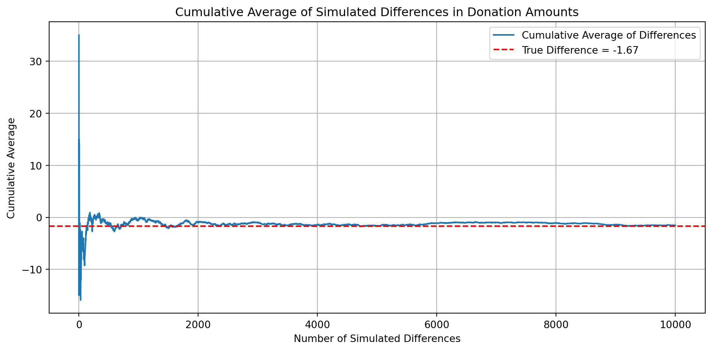

show code
import pandas as pd
import numpy as np
import statsmodels.api as sm
import matplotlib.pyplot as plt
from scipy import stats
df = pd.read_stata("karlan_list_2007.dta")Nicole Ziola
April 18, 2025
Dean Karlan at Yale and John List at the University of Chicago conducted a field experiment to test the effectiveness of different fundraising letters. They sent out 50,000 fundraising letters to potential donors, randomly assigning each letter to one of three treatments: a standard letter, a matching grant letter, or a challenge grant letter. They published the results of this experiment in the American Economic Review in 2007. The article and supporting data are available from the AEA website and from Innovations for Poverty Action as part of Harvard’s Dataverse.
The experiment found that offering a matching donation significantly increased both the likelihood that individuals would donate and the average amount of each donation, Specifically, simply mentioning a match increased the probability of donating by about 22% and raised revenue per letter by 19%. However, increasing the offer from a 1:1 ratio to doubling or tripling the amount did not lead to a statistically significant increase in donations. This finding contradicts the assumption that larger matches are more motivating.
This project seeks to replicate their results.
| Variable | Description |
|---|---|
treatment |
Treatment |
control |
Control |
ratio |
Match ratio |
ratio2 |
2:1 match ratio |
ratio3 |
3:1 match ratio |
size |
Match threshold |
size25 |
$25,000 match threshold |
size50 |
$50,000 match threshold |
size100 |
$100,000 match threshold |
sizeno |
Unstated match threshold |
ask |
Suggested donation amount |
askd1 |
Suggested donation was highest previous contribution |
askd2 |
Suggested donation was 1.25 x highest previous contribution |
askd3 |
Suggested donation was 1.50 x highest previous contribution |
ask1 |
Highest previous contribution (for suggestion) |
ask2 |
1.25 x highest previous contribution (for suggestion) |
ask3 |
1.50 x highest previous contribution (for suggestion) |
amount |
Dollars given |
gave |
Gave anything |
amountchange |
Change in amount given |
hpa |
Highest previous contribution |
ltmedmra |
Small prior donor: last gift was less than median $35 |
freq |
Number of prior donations |
years |
Number of years since initial donation |
year5 |
At least 5 years since initial donation |
mrm2 |
Number of months since last donation |
dormant |
Already donated in 2005 |
female |
Female |
couple |
Couple |
state50one |
State tag: 1 for one observation of each of 50 states; 0 otherwise |
nonlit |
Nonlitigation |
cases |
Court cases from state in 2004-5 in which organization was involved |
statecnt |
Percent of sample from state |
stateresponse |
Proportion of sample from the state who gave |
stateresponset |
Proportion of treated sample from the state who gave |
stateresponsec |
Proportion of control sample from the state who gave |
stateresponsetminc |
stateresponset - stateresponsec |
perbush |
State vote share for Bush |
close25 |
State vote share for Bush between 47.5% and 52.5% |
red0 |
Red state |
blue0 |
Blue state |
redcty |
Red county |
bluecty |
Blue county |
pwhite |
Proportion white within zip code |
pblack |
Proportion black within zip code |
page18_39 |
Proportion age 18-39 within zip code |
ave_hh_sz |
Average household size within zip code |
median_hhincome |
Median household income within zip code |
powner |
Proportion house owner within zip code |
psch_atlstba |
Proportion who finished college within zip code |
pop_propurban |
Proportion of population urban within zip code |
As an ad hoc test of the randomization mechanism, I provide a series of tests that compare aspects of the treatment and control groups to assess whether they are statistically significantly different from one another.
import statsmodels.api as sm
def summarize_ols(model):
coef = model.params
se = model.bse
tstat = model.tvalues
pval = model.pvalues
conf_int = model.conf_int()
print("📊 OLS Regression Summary")
print("-" * 40)
for var in coef.index:
print(f"Variable: {var}")
print(f" Coefficient : {coef[var]:.4f}")
print(f" Std. Error : {se[var]:.4f}")
print(f" t-statistic : {tstat[var]:.4f}")
print(f" p-value : {pval[var]:.4f}")
print(f" 95% CI : [{conf_int.loc[var, 0]:.4f}, {conf_int.loc[var, 1]:.4f}]")
print("-" * 40)
import statsmodels.formula.api as smf
def summarize_probit(model):
coef = model.params
se = model.bse
zstat = model.tvalues
pval = model.pvalues
conf_int = model.conf_int()
print("📈 Probit Regression Summary")
print("-" * 40)
for var in coef.index:
print(f"Variable: {var}")
print(f" Coefficient : {coef[var]:.4f}")
print(f" Std. Error : {se[var]:.4f}")
print(f" z-statistic : {zstat[var]:.4f}")
print(f" p-value : {pval[var]:.4f}")
print(f" 95% CI : [{conf_int.loc[var, 0]:.4f}, {conf_int.loc[var, 1]:.4f}]")
print("-" * 40)
variables = ['mrm2', 'hpa', 'freq', 'female']
results = []
def t_test_formula(x_treat, x_control):
# T-test using pooled standard error
mean1, mean2 = np.mean(x_treat), np.mean(x_control)
std1, std2 = np.std(x_treat, ddof=1), np.std(x_control, ddof=1)
n1, n2 = len(x_treat), len(x_control)
se = np.sqrt((std1**2 / n1) + (std2**2 / n2))
t_stat = (mean1 - mean2) / se
return t_stat, mean1 - mean2
for var in variables:
treat_group = df[df['treatment'] == 1][var].dropna()
control_group = df[df['treatment'] == 0][var].dropna()
# --- T-test
t_stat, t_diff = t_test_formula(treat_group, control_group)
# --- Linear regression
X = sm.add_constant(df['treatment'])
y = df[var]
model = sm.OLS(y, X).fit()
reg_coef = model.params['treatment']
reg_se = model.bse['treatment']
reg_tstat = model.tvalues['treatment']
results.append({
'Variable': var,
'T-test statistic': round(t_stat, 4),
'Mean Diff (T-test)': round(t_diff, 4),
'Regression Coef': round(reg_coef, 4),
'T-stat (Regression)': round(reg_tstat, 4),
'Match?': 'Yes' if np.isclose(t_stat, reg_tstat, atol=1e-4) else 'No'
})
results_df = pd.DataFrame(results)
results_df| Variable | T-test statistic | Mean Diff (T-test) | Regression Coef | T-stat (Regression) | Match? | |
|---|---|---|---|---|---|---|
| 0 | mrm2 | 0.1195 | 0.0137 | NaN | NaN | No |
| 1 | hpa | 0.9704 | 0.6371 | 0.6371 | 0.9441 | No |
| 2 | freq | -0.1108 | -0.0120 | -0.0120 | -0.1109 | Yes |
| 3 | female | -1.7535 | -0.0075 | NaN | NaN | No |
This process mimics Table 1 in the Karlan & List paper, which reports summary statistics by treatment group to demonstrate that the random assignment worked. If the treatment and control groups look similar before the treatment, then any differences after treatment can more confidently be attributed to the treatment itself — and not to pre-existing differences.
The analysis shows that the groups were well-balanced on these pre-treatment variables. No statistically significant differences were found, which supports the validity of the experiment. Table 1 is included in the paper for exactly this reason: to demonstrate that randomization created comparable groups and to reassure readers that the treatment effects are credible.
First, I analyze whether matched donations lead to an increased response rate of making a donation. The donation rates in the treatment vs. control groups are 2.2% and 1.79%, respectively.
proportion_treatment = df[df['treatment'] == 1]['gave'].mean()
proportion_control = df[df['treatment'] == 0]['gave'].mean()
# Barplot setup
labels = ['Control', 'Treatment']
values = [proportion_control, proportion_treatment]
plt.figure(figsize=(6, 4))
plt.bar(labels, values)
plt.ylabel('Proportion Donated')
plt.title('Donation Rates by Group')
plt.ylim(0, max(values)*1.2)
# Add percentage labels above bars
for i, v in enumerate(values):
plt.text(i, v + 0.0005, f"{v:.2%}", ha='center', va='bottom')
plt.tight_layout()
plt.show()Next, I utilize t-tests and linear regression to analyze if the difference in donation rate proportions are statistically significant.
# --- T-TEST: Difference in proportions for binary outcome 'gave' between treatment and control ---
# Separate treatment and control groups
gave_treatment = df[df['treatment'] == 1]['gave']
gave_control = df[df['treatment'] == 0]['gave']
# Calculate group means and sizes
p1 = gave_treatment.mean()
p2 = gave_control.mean()
n1 = gave_treatment.shape[0]
n2 = gave_control.shape[0]
# Calculate standard error and t-statistic
se = np.sqrt((p1 * (1 - p1) / n1) + (p2 * (1 - p2) / n2))
t_stat = (p1 - p2) / se
# Calculate degrees of freedom and p-value
df_ttest = n1 + n2 - 2
p_value = 2 * (1 - stats.t.cdf(abs(t_stat), df=df_ttest))
print("T-test results:")
print(f" Treatment mean: {p1:.4f}")
print(f" Control mean: {p2:.4f}")
print(f" T-statistic: {t_stat:.4f}")
print(f" P-value: {p_value:.4f}\n")
# --- LINEAR REGRESSION: gave ~ treatment ---
# Run regression
X = sm.add_constant(df['treatment'])
y = df['gave']
model = sm.OLS(y, X).fit()
summarize_ols(model)T-test results:
Treatment mean: 0.0220
Control mean: 0.0179
T-statistic: 3.2095
P-value: 0.0013
📊 OLS Regression Summary
----------------------------------------
Variable: const
Coefficient : 0.0179
Std. Error : 0.0011
t-statistic : 16.2246
p-value : 0.0000
95% CI : [0.0157, 0.0200]
----------------------------------------
Variable: treatment
Coefficient : 0.0042
Std. Error : 0.0013
t-statistic : 3.1014
p-value : 0.0019
95% CI : [0.0015, 0.0068]
----------------------------------------The p-value is significant at the 95% confidence level, allowing us to conclude that the difference in donation rates between treatment and control is statistically significant and not due to random chance alone.
When people were told their donation would be matched, they were more likely to give compared to those who did not receive the same offer. Even though the difference in donation rates is not huge, it is meaningful enough to show that the match offer was impactful on human behavior.
We also ran a regression that supported the same conclusion: the offer of a match made people slightly more likely to donate.
In short, match-based donation programs achieve slightly higher dconation rates than non-matched programs, suggesting that the extra push from donation matching is effective in boosting donation rates.
Optimization terminated successfully.
Current function value: 0.100443
Iterations 7
📈 Probit Regression Summary
----------------------------------------
Variable: Intercept
Coefficient : -2.1001
Std. Error : 0.0233
z-statistic : -90.0728
p-value : 0.0000
95% CI : [-2.1458, -2.0544]
----------------------------------------
Variable: treatment
Coefficient : 0.0868
Std. Error : 0.0279
z-statistic : 3.1129
p-value : 0.0019
95% CI : [0.0321, 0.1414]
----------------------------------------
NoneIn further support of the t-test and regression conclusion, I used probit regression, which confirms our initial findings with a statistically significant and positive coefficient value of 0.0868 on treatment. This suggests that holding all else constant, participants are more likely to donate if they are part of the treatment group rather than the control.
Next, I assess the effectiveness of different sizes of matched donations on the response rate.
from scipy.stats import ttest_ind
# Subset groups based on match ratio
gave_ratio1 = df[df['ratio'] == 1]['gave']
gave_ratio2 = df[df['ratio'] == 2]['gave']
gave_ratio3 = df[df['ratio'] == 3]['gave']
# Perform independent t-tests
t_2v1, p_2v1 = ttest_ind(gave_ratio2, gave_ratio1, equal_var=False)
t_3v2, p_3v2 = ttest_ind(gave_ratio3, gave_ratio2, equal_var=False)
t_3v1, p_3v1 = ttest_ind(gave_ratio3, gave_ratio1, equal_var=False)
# Print results
print("T-Test Results (Donation Likelihood by Match Ratio):\n")
print(f"2:1 vs 1:1 -> t = {t_2v1:.3f}, p = {p_2v1:.4f}")
print(f"3:1 vs 2:1 -> t = {t_3v2:.3f}, p = {p_3v2:.4f}")
print(f"3:1 vs 1:1 -> t = {t_3v1:.3f}, p = {p_3v1:.4f}")T-Test Results (Donation Likelihood by Match Ratio):
2:1 vs 1:1 -> t = 0.965, p = 0.3345
3:1 vs 2:1 -> t = 0.050, p = 0.9600
3:1 vs 1:1 -> t = 1.015, p = 0.3101The t-test series analyzing the size of the match ratio suggest that there is no significant differences in donation likelihood by match ratio. This supports the authors’ findings that while the essence of a match offer does increase donation likelihood, the actual size of the match has no effect on increasing donation rates.
Regression with Categorical Variable:
📊 OLS Regression Summary
----------------------------------------
Variable: Intercept
Coefficient : 0.0179
Std. Error : 0.0011
t-statistic : 16.2245
p-value : 0.0000
95% CI : [0.0157, 0.0200]
----------------------------------------
Variable: C(ratio)[T.1]
Coefficient : 0.0029
Std. Error : 0.0017
t-statistic : 1.6615
p-value : 0.0966
95% CI : [-0.0005, 0.0063]
----------------------------------------
Variable: C(ratio)[T.2]
Coefficient : 0.0048
Std. Error : 0.0017
t-statistic : 2.7445
p-value : 0.0061
95% CI : [0.0014, 0.0082]
----------------------------------------
Variable: C(ratio)[T.3]
Coefficient : 0.0049
Std. Error : 0.0017
t-statistic : 2.8016
p-value : 0.0051
95% CI : [0.0015, 0.0083]
----------------------------------------
NoneNext, I will use regression with ratio as a categorical variable in order to confirm the t-test results.
Intercept (0.0179): This is the average donation rate for the control group - 1.79% of people donated in that group.
C(ratio)[T.1] = 0.0029: People who were offered a 1:1 match were slightly more likely to donate than those in the control group, but the result isn’t statistically significant (p = 0.097). This suggests a possible increase, but not significantly.
C(ratio)[T.2] = 0.0048: People who were offered a 2:1 match were more likely to donate compared to the control group. This result is statistically significant (p = 0.006), suggesting that the 2:1 offer had a real impact, but at less than half a percentage point.
C(ratio)[T.3] = 0.0049: Similarly, those offered a 3:1 match were also more likely to give than people in the control group. This effect is statistically significant (p = 0.005) and about the same size as the 2:1 effect at just below half a percentage point.
The regression output suggests that the differences between control, 1:1 match, 2:1 match, and 3:1 match are very small, telling us that the difference between match amounts does not impact donation probaility.
import statsmodels.formula.api as smf
# --- RAW RESPONSE RATE DIFFERENCES ---
# Compute average donation rates by ratio level
response_rate_1to1 = df[df['ratio'] == 1]['gave'].mean()
response_rate_2to1 = df[df['ratio'] == 2]['gave'].mean()
response_rate_3to1 = df[df['ratio'] == 3]['gave'].mean()
# Calculate raw differences
raw_diff_2v1 = response_rate_2to1 - response_rate_1to1
raw_diff_3v2 = response_rate_3to1 - response_rate_2to1
print("Raw response rate differences:")
print(f" 2:1 vs 1:1: {raw_diff_2v1:.4f}")
print(f" 3:1 vs 2:1: {raw_diff_3v2:.4f}\n")
# --- REGRESSION APPROACH ---
# Create dummy variables if not already present
df['ratio2'] = (df['ratio'] == 2).astype(int)
df['ratio3'] = (df['ratio'] == 3).astype(int)
# Fit model using 1:1 as baseline
model = smf.ols('gave ~ ratio2 + ratio3', data=df).fit()
# Extract regression-based differences
reg_diff_2v1 = model.params['ratio2']
reg_diff_3v2 = model.params['ratio3'] - model.params['ratio2']
print("Regression-estimated response rate differences:")
print(f" 2:1 vs 1:1: {reg_diff_2v1:.4f}")
print(f" 3:1 vs 2:1: {reg_diff_3v2:.4f}")Raw response rate differences:
2:1 vs 1:1: 0.0019
3:1 vs 2:1: 0.0001
Regression-estimated response rate differences:
2:1 vs 1:1: 0.0036
3:1 vs 2:1: 0.0001I conclude that the different sizes of matched donations do not effectively change response rates, evident from the very small difference in donation proportion between match groups regardless of the match ratio.
In this subsection, I analyze the effect of the size of matched donation on the size of the charitable contribution.
from scipy.stats import ttest_ind
import statsmodels.formula.api as smf
# --- T-TEST ---
# Compare donation amounts between treatment and control groups
amount_treatment = df[df['treatment'] == 1]['amount']
amount_control = df[df['treatment'] == 0]['amount']
# T-test (unequal variance)
t_stat, p_val = ttest_ind(amount_treatment, amount_control, equal_var=False)
print("T-test: Donation Amount ~ Treatment")
print(f" T-statistic: {t_stat:.3f}")
print(f" P-value: {p_val:.4f}\n")
# --- REGRESSION ---
# Run bivariate regression
model = smf.ols('amount ~ treatment', data=df).fit()
print("Bivariate Linear Regression: Donation Amount ~ Treatment")
print(summarize_ols(model))T-test: Donation Amount ~ Treatment
T-statistic: 1.918
P-value: 0.0551
Bivariate Linear Regression: Donation Amount ~ Treatment
📊 OLS Regression Summary
----------------------------------------
Variable: Intercept
Coefficient : 0.8133
Std. Error : 0.0674
t-statistic : 12.0630
p-value : 0.0000
95% CI : [0.6811, 0.9454]
----------------------------------------
Variable: treatment
Coefficient : 0.1536
Std. Error : 0.0826
t-statistic : 1.8605
p-value : 0.0628
95% CI : [-0.0082, 0.3154]
----------------------------------------
NoneThis analysis tells us whether offering a matching ratio of any amount influences the dollar amount of the donation, regardless of whether or not a donation was made (meaning zeros are included for non-donors).
Intercept (0.8133): This is the average donation amount in the control group — around $0.81 per person (including all the zeroes from people who didn’t donate).
Treatment coefficient (0.1536): This tells us that people in the treatment group gave about 15 cents more, on average, than those in the control group.
The difference is marginally signficant with a p-value of 0.06, but the difference between the two values is relatively small, and we cannot definitively attribute the increase to the treatment effect.
from scipy.stats import ttest_ind
import statsmodels.formula.api as smf
# --- FILTER: Only people who donated ---
df_donors = df[df['gave'] == 1]
# --- T-TEST on Amount Given ---
amount_treatment = df_donors[df_donors['treatment'] == 1]['amount']
amount_control = df_donors[df_donors['treatment'] == 0]['amount']
t_stat, p_val = ttest_ind(amount_treatment, amount_control, equal_var=False)
print("T-test (Amount Given | Gave = 1):")
print(f" T-statistic: {t_stat:.3f}")
print(f" P-value: {p_val:.4f}\n")
# --- REGRESSION: Donation Amount ~ Treatment (only donors) ---
model = smf.ols('amount ~ treatment', data=df_donors).fit()
print("OLS Regression (Amount Given | Gave = 1):")
print(summarize_ols(model))T-test (Amount Given | Gave = 1):
T-statistic: -0.585
P-value: 0.5590
OLS Regression (Amount Given | Gave = 1):
📊 OLS Regression Summary
----------------------------------------
Variable: Intercept
Coefficient : 45.5403
Std. Error : 2.4234
t-statistic : 18.7921
p-value : 0.0000
95% CI : [40.7850, 50.2956]
----------------------------------------
Variable: treatment
Coefficient : -1.6684
Std. Error : 2.8724
t-statistic : -0.5808
p-value : 0.5615
95% CI : [-7.3048, 3.9680]
----------------------------------------
NoneThis regression answers the question: “Among people who chose to donate, did those who received a match offer give more or less money than those who didn’t?”
Intercept (45.54): This is the average amount donated by people in the control group, i.e., those who donated without being offered a match. On average, they gave about $45.54.
Treatment coefficient (-1.6684): This tells us that people in the treatment group gave about $1.67 less than those in the control group (among those who donated). However, the p-value is 0.561, which is very high, meaning this difference is not statistically significant. In other words, there’s no strong evidence that the treatment influenced how much donors gave.
This analysis suggests that offering a match did not affect how much donors gave, once they decided to give. While people in the treatment group gave a little less on average, this could easily be due to random chance. The treatment seemed to influence whether people donated, but not how much they gave once they did.
We can interpret causality here since the treatment was randomly assigned. However, the causality is conditional on the fact that the participant chose to donate, not generalized to the entire population.
import matplotlib.pyplot as plt
# Filter to only people who donated
df_donors = df[df['gave'] == 1]
# Split into treatment and control
treatment_donors = df_donors[df_donors['treatment'] == 1]['amount']
control_donors = df_donors[df_donors['treatment'] == 0]['amount']
# Calculate means
mean_treatment = treatment_donors.mean()
mean_control = control_donors.mean()
# Plot histograms
fig, axes = plt.subplots(1, 2, figsize=(14, 5), sharey=True)
# Control group plot
axes[0].hist(control_donors, bins=30, color='skyblue', edgecolor='black')
axes[0].axvline(mean_control, color='red', linestyle='--', linewidth=2, label=f'Mean = {mean_control:.2f}')
axes[0].set_title("Control Group (Donors Only)")
axes[0].set_xlabel("Donation Amount")
axes[0].set_ylabel("Frequency")
axes[0].legend()
# Treatment group plot
axes[1].hist(treatment_donors, bins=30, color='lightgreen', edgecolor='black')
axes[1].axvline(mean_treatment, color='red', linestyle='--', linewidth=2, label=f'Mean = {mean_treatment:.2f}')
axes[1].set_title("Treatment Group (Donors Only)")
axes[1].set_xlabel("Donation Amount")
axes[1].legend()
plt.tight_layout()
plt.show()The plots above show the distribution of donation amounts among people who donated, separated by treatment group.
The left panel displays the control group (those who did not receive a match offer). Their donation amounts are spread out, with most donors giving smaller amounts, and a few giving significantly more. The average donation in this group is about $45.54, marked by the red dashed line.
The right panel shows the treatment group — those who were offered a matching donation. This group also gave mostly small amounts, with a few larger gifts, and more donations were made. The average donation here is slightly lower, at about $43.87, also marked with a red dashed line.
As a reminder of how the t-statistic “works,†in this section I use simulation to demonstrate the Law of Large Numbers and the Central Limit Theorem.
Suppose the true distribution of respondents who do not get a charitable donation match is Bernoulli with probability p=0.018 that a donation is made.
Further suppose that the true distribution of respondents who do get a charitable donation match of any size is Bernoulli with probability p=0.022 that a donation is made.
import numpy as np
import matplotlib.pyplot as plt
# Filter to only people who donated
df_donors = df[df['gave'] == 1]
# Control and treatment donation amounts
control = df_donors[df_donors['treatment'] == 0]['amount'].values
treatment = df_donors[df_donors['treatment'] == 1]['amount'].values
# True difference in means
true_diff = treatment.mean() - control.mean()
# Simulate draws
np.random.seed(42)
control_draws = np.random.choice(control, size=100000, replace=True)
treatment_draws = np.random.choice(treatment, size=10000, replace=True)
# Sample 10,000 control values from the 100,000 to match length
control_draws_subset = np.random.choice(control_draws, size=10000, replace=False)
# Calculate vector of differences
differences = treatment_draws - control_draws_subset
# Compute cumulative average
cumulative_avg = np.cumsum(differences) / np.arange(1, len(differences) + 1)
# Plot cumulative average
plt.figure(figsize=(10, 5))
plt.plot(cumulative_avg, label='Cumulative Average of Differences')
plt.axhline(true_diff, color='red', linestyle='--', label=f'True Difference = {true_diff:.2f}')
plt.title("Cumulative Average of Simulated Differences in Donation Amounts")
plt.xlabel("Number of Simulated Differences")
plt.ylabel("Cumulative Average")
plt.legend()
plt.grid(True)
plt.tight_layout()
plt.show()
The cumulative average clearly approaches the true difference in means.
In the plot, you can see that although the average difference between treatment and control donations fluctuates quite a bit at the beginning (as expected with small sample sizes), those fluctuations start to smooth out. As more simulated differences are added — getting closer to 10,000 — the blue line gradually stabilizes around the red dashed line, which marks the true difference in means (approximately –1.67).
This behavior demonstrates the law of large numbers in action: as the number of observations increases, the cumulative average becomes more consistent and converges toward the actual value we’re trying to estimate.
import numpy as np
import matplotlib.pyplot as plt
# --- Simulation Settings ---
np.random.seed(42)
p_control = 0.018 # Probability of success in control group
p_treatment = 0.022 # Probability of success in treatment group
sample_sizes = [50, 200, 500, 1000] # Different sample sizes to simulate
n_simulations = 1000 # Number of simulations per sample size
true_diff = p_treatment - p_control # True difference in proportions
# --- Function to simulate sampling distribution of mean differences ---
def simulate_diffs(n, p_control, p_treatment, reps=1000):
diffs = []
for _ in range(reps):
control_sample = np.random.binomial(1, p_control, n)
treatment_sample = np.random.binomial(1, p_treatment, n)
diff = np.mean(treatment_sample) - np.mean(control_sample)
diffs.append(diff)
return np.array(diffs)
# --- Generate and Plot Histograms ---
fig, axes = plt.subplots(2, 2, figsize=(12, 10), sharey=True)
axes = axes.flatten()
for i, n in enumerate(sample_sizes):
simulated_diffs = simulate_diffs(n, p_control, p_treatment, n_simulations)
ax = axes[i]
ax.hist(simulated_diffs, bins=30, density=True, alpha=0.7, edgecolor='black', color='skyblue')
ax.axvline(0, color='black', linestyle='--', linewidth=1, label='Zero')
ax.axvline(true_diff, color='red', linestyle='--', linewidth=2, label=f'True Diff = {true_diff:.3f}')
ax.set_title(f"Sample Size = {n}")
ax.set_xlabel("Difference in Means")
ax.set_ylabel("Density")
ax.legend()
plt.suptitle("Sampling Distributions of Differences in Proportions", fontsize=16)
plt.tight_layout(rect=[0, 0.03, 1, 0.95])
plt.show()As the sample size increases, zero shifts from being in the middle of the distribution to being in the tail.
At smaller sample sizes (like n = 50), the distribution of average differences is wide and scattered. Zero sits near the center, meaning there’s a lot of uncertainty — the observed differences could easily include zero, suggesting no clear effect.
As the sample size grows (to 200 and 500), the distribution starts to tighten and center around a slightly negative value. By n = 500, zero is already drifting out of the middle, suggesting that most random samples are detecting a small negative difference between treatment and control.
At the largest sample size (n = 1000), the distribution is sharply peaked and centered well below zero. Here, zero clearly lies in the tail, which tells us that the chance of seeing no difference (zero) is low if the treatment truly causes lower donation amounts.
Zero is in the middle when sample sizes are small, meaning we can’t distinguish treatment from control. Zero moves to the tail as sample size grows, giving us stronger evidence that the treatment had a real (though small) effect.